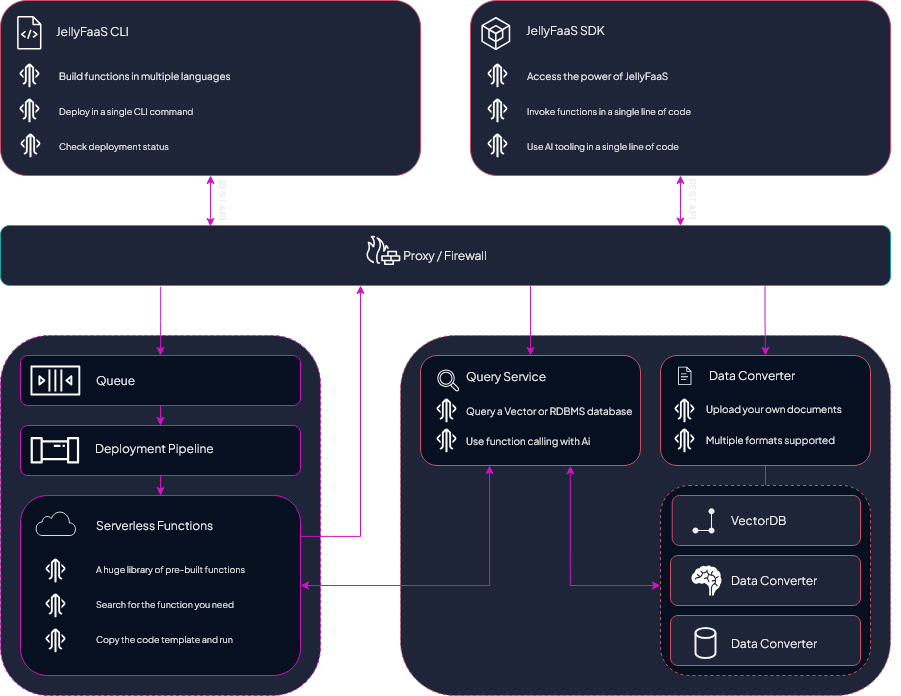

What is JellyFaaS
JellyFaaS is an innovative platform offering AI-ready cloud functions, tools, and SDKs. It empowers developers to accelerate workflows, reduce time-to-market, minimize technical debt, and lower infrastructure costs.
JellyFaaS architecture
Overview of the JellyFaaS architecture and core components:

Key Components of JellyFaaS
JellyFaaS is built on three foundational pillars:
-
Cloud Functions
Deploy and use community-driven cloud functions. Functions are hosted, scaled, and managed automatically by JellyFaaS.
Supported languages include Python, Node.js, Go, and more.
-
AI Framework
Integrate live, contextual capabilities into large language models (LLMs) like GPT. Use JellyFaaS to enhance LLMs with custom datasets or enable real-world actions.
-
Tools and SDKs
Streamline development with the JellyFaaS CLI and SDKs. Write, deploy, and integrate with ease across supported programming languages.
How does JellyFaaS work?
Functions
At the heart of JellyFaaS is the concept of stateless functions, small web services designed to handle specific tasks. Functions are:
- Language-Agnostic: Write in Node.js, Python, Go, C#, Java, Ruby, PHP, or more.
- Auto-Scaling: Functions automatically scale based on demand.
- Easy to Deploy: Use the JellyFaaS CLI or REST API to deploy functions efficiently.
Deployment Workflow
Deploying a function involves:
- Writing the function code and its specification file.
- Deploying the function using the CLI or REST API, which validates and containerizes it.
- Accessing the function through the JellyFaaS SDK or REST API.
Functions can be deployed via the JellyFaaS REST API, but it is recommended to use the CLI tool to streamline this process. A simple specification file defines the function's usage, both acting as documentation and enabling AI integration. Behind the scenes, deploying a function performs validation of your specification, containerizes the app,
After deployment, functions can be invoked via the JellyFaaS REST API or SDKs, regardless of the language the function was written in. For example, a function written in Ruby could be invoked by a client via the NodeJS SDK.
- JellyFaaS Function Architecture
graph LR subgraph Inputs["Function Source"] direction LR Code["Source Code"] SpecFile["Specification File"] end subgraph JellyFaaS["JellyFaaS Function Library"] direction LR Func["ExampleFunc1"] Func2["ExampleFunc2"] Func3["ExampleFunc3"] end Inputs --> | Deploy via CLI | JellyFaaS --> | Invoke via SDK | Client["Client"]
AI Function Calling
JellyFaaS specification files define function signatures in a way that allows seamless integration with LLMs such as GPT and Gemini. These specifications serve as both documentation and an interface for AI to invoke functions dynamically.
-
AI Function Calling Flow
- The client sends a prompt to the AI via JellyFaaS.
- Based on the prompt, the AI decides to invoke a relevant function.
- The function processes the task and sends the result back to the AI.
- The AI integrates the function output into its final response.
graph LR subgraph Request["Client Request"] direction LR Prompt["`**Prompt** *e.g. what's the weather in boston today?*`"] Function["`**Function ID** *e.g. LiveWeatherFunc*`"] end subgraph JellyFaaS["JellyFaaS Function Library"] direction LR Func4["LiveWeatherFunc"] end Request --> | **1** - Request via SDK | JellyFaaSAI["JellyFaaS AI"] --> | **2** - Invoking function | Func4 --> | **3** - Function response | JellyFaaSAI --> | **4** - AI response | Request
Learn More
See function calling for a tutorial on using this feature.
AI Document Embedding
JellyFaaS allows you to upload documents to provide additional context to AI prompts. This feature enables better, more relevant responses based on your specific data.
-
Step 1: Upload Documents
Use the JellyFaaS SDK or REST API to upload documents and associate them with a specific database.
graph LR subgraph Upload["Client Document Upload"] direction LR Document["`**Documents** *e.g. CompanyPolicies.pdf*`"] Function["`**DestDatabaseID** *e.g. MyCompanyPolicies*`"] end subgraph JFDB["JellyFaaS AI Storage"] db[(MyCompanyPolicies)] end Upload --> | **1** - Upload via SDK or REST | JellyFaaSAI["JellyFaaS AI"] --> | **2** - Embeds and stores | db
-
Step 2: Query Using Documents
Retrieve context from the stored database during AI queries.
graph LR subgraph JFDB["JellyFaaS AI Storage"] db[(MyCompanyPolicies)] end subgraph Request["Client Request"] direction LR Prompt["`**Prompt** *e.g. List all policies relating to...*`"] DatabaseID["`**DatabaseID** *e.g. MyCompanyPolicies*`"] end Request --> |**1** - Request via SDK|JellyFaaSAI --> |**2** - Retrieve context| db --> | **3** - DB response| JellyFaaSAI --> | **4** - AI response | Request
Learn More
See document embedding for a tutorial on using this feature.
AI SQL Integration
JellyFaaS connects directly to your SQL databases, enabling LLMs to perform complex queries seamlessly.
- AI SQL Integration Flow
- The client specifies a prompt and database connection details.
- The AI translates the natural language prompt into an SQL query, executes it, and retrieves results.
- Response Generation: Results are formatted into a comprehensive AI response.
graph LR subgraph JFDB["Client's SQL DB"] db[(MySalesDataDB)] end subgraph Request["Client Request"] direction LR Prompt["`**Prompt** *e.g. Fetch 2024 top 5 products by total revenue...*`"] DatabaseID["`**SQL DB Connection** *e.g. MySalesDataDB*`"] end Request --> |**1** - Request via SDK|JellyFaaSAI --> |**2a** - Retrieve context| db --> | **2b** - DB response| JellyFaaSAI --> | **3** - AI response | Request
Learn More
See SQL integration for a tutorial on using this feature.
Why Choose JellyFaaS
JellyFaaS makes development easier by providing scalable cloud functions, AI-ready integrations, and productivity tools. Be it deploying ready-to-use functions, enhancing AI with your custom data, or reducing infrastructure overhead, JellyFaaS empowers you to build smarter, faster, and more efficiently.
Next Steps
- Get your Secret key
- Get started with the SDKs
- Get started with the CLI
- Create your first function